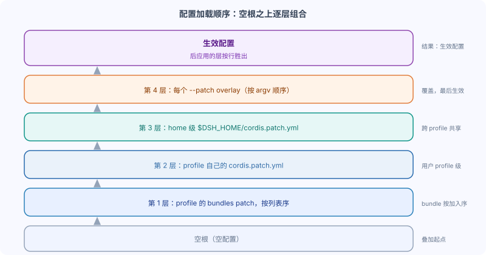

DeepSeek Harness: Installing Plugins and Configuration Loading Order
The previous chapter created the hello-plugin bundle; this one installs it into a profile.
Installation steps inDeepSeek Harness combination bundle and profile: two manifestsProceed based on that; you can first review the two manifests from that article.
This chapter will also answer a key question: when configurations from multiple bundles are overlaid, which one overrides which.
This is determined by the loading order of the effective configuration.
Loading order: layering of the effective configuration
The effective configuration is composed layer by layer in a fixed order over an empty root, and later-applied layers win line by line.

The complete order is as follows.
| Sequence | layer | Description |
|---|---|---|
| 1 | profile'sdsh.profile.bundlesList | Each bundle's patches follow the list order: first dsh-base, then each installed bundle in the order it was added. |
| 2 | profile's owncordis.patch.yml | User profile-level patch layer |
| 3 | home-level$DSH_HOME/cordis.patch.yml | Machine-local preferences shared by all profiles. |
| 4 | each--patch <path> overlay | In argv order |
Application parameters are not another patch layer.
Top-level bundles can resolve them through the application's own ordinary services.
Later-applied layers win line by line, and a patch replaces the entire config value of the target line rather than deep-merging individual keys.
Hands-on: Install hello-plugin into profile
dsh plugin --profile <name> <args...>Forwarded to pnpm within the profile directory, so all pnpm subcommands are available.
In a directory containing hello-plugin, install a checkout of that package.
dsh plugin --profile demo add ./hello-plugin
First use initializes the profile.
@deepseek-ai/dsh-baseIt will become its first composite package.
pnpm links the checkout, and dsh, because this package declaresdsh.bundle, append it todsh.profile.bundles。
The generated profile's package.json is roughly as follows.
Example
"name": "dsh-profile-demo",
"private": true,
"dependencies": {
"dsh-hello-plugin": "link:/path/to/hello-plugin"
},
"dsh": {
"profile": {
"bundles": [
"@deepseek-ai/dsh-base",
"dsh-hello-plugin"
]
}
}
}
The meaning of each field is as follows.
| Fields | Description |
|---|---|
name | The package name of the profile, in the form ofdsh-profile-demo |
private | The profile is used only on this machine and is not published. |
dependencies | Out-of-tree plugin dependencies are linked to the local checkout by pnpm. |
dsh.profile.bundles | An ordered bundle list; the loading order is the array order here. |
First do not start it; just validate the layer, then start it.
dsh --profile demo --dump-config # 会显示一个 "# == dsh-hello-plugin" 层 dsh --profile demo
--dump-configIt prints the overlaid effective configuration, for checking which bundle each layer comes from.
Should be visible in the output# == dsh-hello-pluginlayer markers like this.
Removing a plugin is equally simple.
dsh plugin --profile demo remove dsh-hello-plugin # 同时移除依赖和对应的层
Patch replaces entire lines by id
A patch is not a deep merge; instead,idit replaces the entire config value of the target line as a whole line.
This brings two implications for composite package authors.
| Merge method | Behavior | dsh's choice |
|---|---|---|
| Deep merge | Only the changed keys are overridden; other keys are automatically preserved. | Not the case |
| Replace the entire line | To replace a config value by id on a whole-line basis, you must restate all keys. | dsh uses |
First, your patch can override lines from earlier layers by id.
Just likedsh-web-appBundle coveragedsh-baselike that line.
But you must restate every key that the line requires, not just the one you changed.
Second, users can, in their own profile'scordis.patch.ymloverride your lines in it, without needing to modify your package.
Therefore, give priority to config defaults that users are likely to keep, and leave the rest to the schema.
Built-in composite package names are always resolved from the dsh installation directory itself.
pnpm only manages out-of-tree packages, so your bundle can safely depend on it.
@deepseek-ai/dsh-baseExists and remains consistent with the installation.
Summary and self-test
Installing a plugin is appending to the profile's bundles list an entry that declaresdsh.bundleofPackage，生效Configurationpress bundles → profile patch → home patch → --patch overlay ofSequence逐Cascadeadd。
Self-test questions:
- What is the four-layer loading order of the effective configuration?
- When a patch overrides by id, why must all keys be restated?
dsh --profile demo --dump-configWhat is its function?